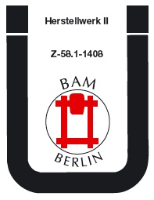
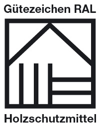

Nach den Bauordnungen der Länder müssen bauliche Anlagen so beschaffen sein, dass durch pflanzliche und tierische Schädlinge keine Gefahren oder unzumutbare Belästigungen entstehen. Aber auch außerhalb von baulichen Anlagen kann Holzschutz sinnvoll und notwendig sein (siehe Tabelle).
Dabei hat konstruktiver Holzschutz Vorrang vor chemischem Holzschutz. Beispielsweise können Hölzer eingesetzt werden, die auf Grund ihrer natürlichen Resistenz gegen Pilze, Insekten und/oder Moderfäule keinen chemischen Holzschutz benötigen. Eine Aufstellung solcher Holzarten findet sich in DIN EN 335-2 "Dauerhaftigkeit von Holz und Holzprodukten – Definition der Gebrauchsklassen – Teil 2: Anwendung von Vollholz".
Chemische Holzschutzmittel unterliegen Anwendungsbeschränkungen. Diese sind dem jeweiligen Zulassungsbescheid bzw. technischen Merkblatt des Herstellers zu entnehmen.
Die Auswahl der Holzschutzmittel und Einbringverfahren richten sich nach der Gebrauchsklasse (bisher: Gefährdungsklasse) – siehe DIN EN 335-1 "Definition der Gefährdungsklassen für einen biologischen Befall – Teil 1: Allgemeines".
Infolge der Biozidrichtlinie * dürfen nur Wirkstoffe auf den europäischen Markt kommen, deren Wirksamkeit gegenüber Insekten und Pilzen sowie deren gesundheitliche und umweltbezogene Wirkung geprüft und bewertet sind.
Weitere Ausführungen und Regelungen zum Holzschutz finden sich u.a. in:
| Gefährdung durch | ||||||
| Gebrauchsklasse (bisher: Gefährdungsklasse) |
Beanspruchung | In-sekten | Pilze | Aus-waschung | Mo-derfäule | Beispiele |
| 0 | Innen verbautes Holz | nein | nein | nein | nein | Holz in Aufenthaltsräumen, Kinderspielzeug, Fußböden in trockenen Innenräumen, Möbel, Innentüren |
| 1 | ständig trocken | ja | nein | nein | nein | Tragende oder aussteifende Innenbauteile, z.B. tragende Innenwände, tragende Decken |
| 2 | Holz, das weder dem Erdkontakt noch direkt der Witterung oder Auswaschung ausgesetzt ist, vorübergehende Befeuchtung möglich | ja | ja | nein | nein | Innenräume mit höherer Luftfeuchtigkeit, Außenbereiche unter Dach, z.B. Hallentragwerke, Dachstühle |
| 3 | Holz, der Witterung oder Kondensation ausgesetzt, aber nicht in Erdkontakt | ja | ja | ja | nein | Nassräume im Innenbereich, Außenbereich, z.B.Wintergärten, Fenster, Balkone, Fassadenverkleidungen, Zaunlatten |
| 4 | Holz in dauerndem Erdkontakt oder ständiger starker Befeuchtung ausgesetzt | ja | ja | ja | ja | Bauteile, die ganz oder teilweise in dauerndem Erd- oder Wasserkontakt stehen, z.B. Bootsstege, Masten, Blumentröge, Spielplatzgeräte |
| 5 | Holz in ständigem Kontakt mit Meerwasser | ja | ja | ja | ja | Kai-Anlagen |
Holzschutzmittel für tragende und aussteifende Bauteile (z.B. Stützbalken, Holzbrücken, Fachwerke) müssen eine allgemeine bauaufsichtliche Zulassung durch das Deutsche Institut für Bautechnik (DIBt) aufweisen.

Im Rahmen des bauaufsichtlichen Zulassungsverfahrens wird auch eine gesundheitliche und umweltbezogene Bewertung dieser Holzschutzmittel vorgenommen. Dabei darf aber nicht übersehen werden, dass im Rahmen der bauaufsichtlichen Zulassung vor allem die Wirksamkeit gegenüber pflanzlichen und tierischen Schädlingen nachgewiesen werden muss.
Diese Holzschutzmittel sind nur für die gewerbliche Verwendung zugelassen und dürfen nur von Fachleuten verarbeitet werden, die im Holzschutz erfahren sind. Für jedes Mittel ist in der allgemeinen bauaufsichtlichen Zulassung festgelegt, in welchem Anwendungsbereich und mit welchem Einbringverfahren das Mittel verarbeitet werden darf.
Aus der bauaufsichtlichen Zulassung kann jedoch nicht gefolgert werden, dass bei der Herstellung, dem Transport und der Verarbeitung von Holzschutzmitteln keine Gefahren für die Gesundheit des Menschen und die Umwelt auftreten.
Vorbeugender chemischer Holzschutz ist in Wohnräumen nicht erforderlich und sollte deshalb z.B. für Decken, Verkleidungen sowie Möbel in Wohnräumen nicht angewandt werden.
Zu den nichttragenden und nichtaussteifenden Bauteilen gehören z.B.

Holzschutzmittel, die für den Schutz dieser Bauteile angewandt werden, benötigen keine bauaufsichtliche Zulassung.
Ein Teil dieser Holzschutzmittel trägt das RAL-Gütezeichen der Gütegemeinschaft Holzschutzmittel e.V.
Die Vergabe der RAL-Gütezeichen erfolgt nach festgelegten Güte- und Prüfbestimmungen in enger Zusammenarbeit mit dem Bundesinstitut für Risikobewertung (BfR) und dem Umweltbundesamt (UBA).
Speziell für den Bereich der Bläueschutzmittel, die Bestandteil von Beschichtungssystemen für Fenster und Türen sind, wurde vom Verband der deutschen Lackindustrie e.V. im Rahmen der Biozidrichtlinie ein freiwilliges Registrierverfahren erarbeitet.
Voraussetzung für die Registrierung ist eine Prüfung der Wirksamkeit gegenüber Bläuepilzen durch die Bundesanstalt für Materialforschung (BAM), eine gesundheitliche Bewertung durch das Bundesinstitut für Risikobewertung (BfR) und eine Bewertung der Auswirkungen auf die Umwelt durch das Umweltbundesamt (UBA).
* Richtlinie 98/8/EG über das Inverkehrbringen von Biozid-Produkten vom 16.02.1998 – siehe auch www.baua.de